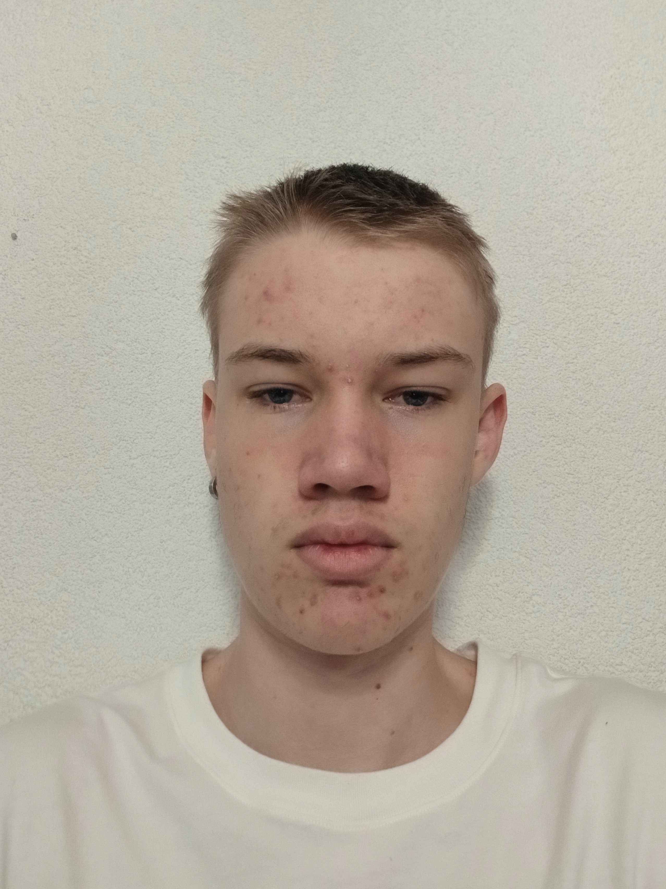
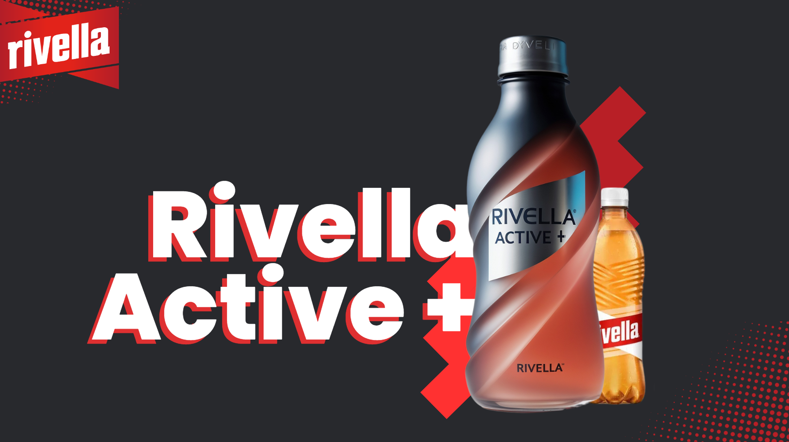

Dorian Prélaz
Médiamaticien 3e année
Bonjour ! Je m’appelle Dorian Prélaz, j’ai 19 ans et je suis un médiamaticien suisse passionné par le web, le design et le marketing digital. En parallèle de mes études, je suis Seniorcoach dans plusieurs projets d’IdéeSport, notamment au Midnight de Bercher, Échallens et à OpenSunday Yverdon. J’aime travailler avec les jeunes, organiser des activités et contribuer à créer un environnement dynamique et positif. Dans mon temps libre, je joue souvent au basket, j’aime créer des vidéos pour les réseaux sociaux et développer de nouveaux projets liés au digital. Curieux, créatif et motivé, je cherche toujours à apprendre et à améliorer mes compétences, autant dans le web que dans la communication visuelle.
Mon parcours
Un aperçu rapide de mon évolution entre la formation de médiamaticien et mon rôle de Seniorcoach chez IdéeSport.
-
2022
Début de la formation de médiamaticien
Entrée en formation avec un focus sur le web, le design et la communication digitale.
-
2023
Engagement comme Seniorcoach IdéeSport
Responsabilité de la coordination et de l’encadrement des jeunes sur plusieurs projets, notamment Midnight Bercher / Échallens et OpenSunday Yverdon.
Rôle de Seniorcoach -
2024–2025
Projets web & design professionnels
Réalisation de projets comme Rivella Active +, Retromania ou Anty‑Gang, en liant créativité, marketing et expérience utilisateur.
Projets sportifs
Organisation d'événements sportifs et accompagnement des jeunes.
Web
Sites et projets digitaux centrés sur l’expérience utilisateur.
Design
Identités visuelles et créations graphiques modernes.
Mon projet coup de cœur
Rivella Active +
Une campagne visuelle autour de Rivella Active +, mêlant design graphique, mise en page et réflexion marketing pour mettre en valeur la marque.
Voir le projet